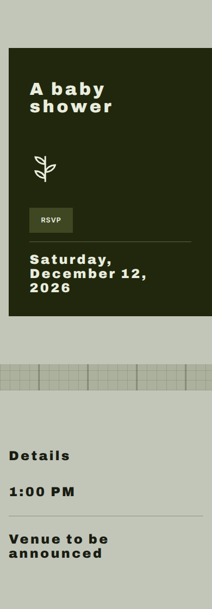
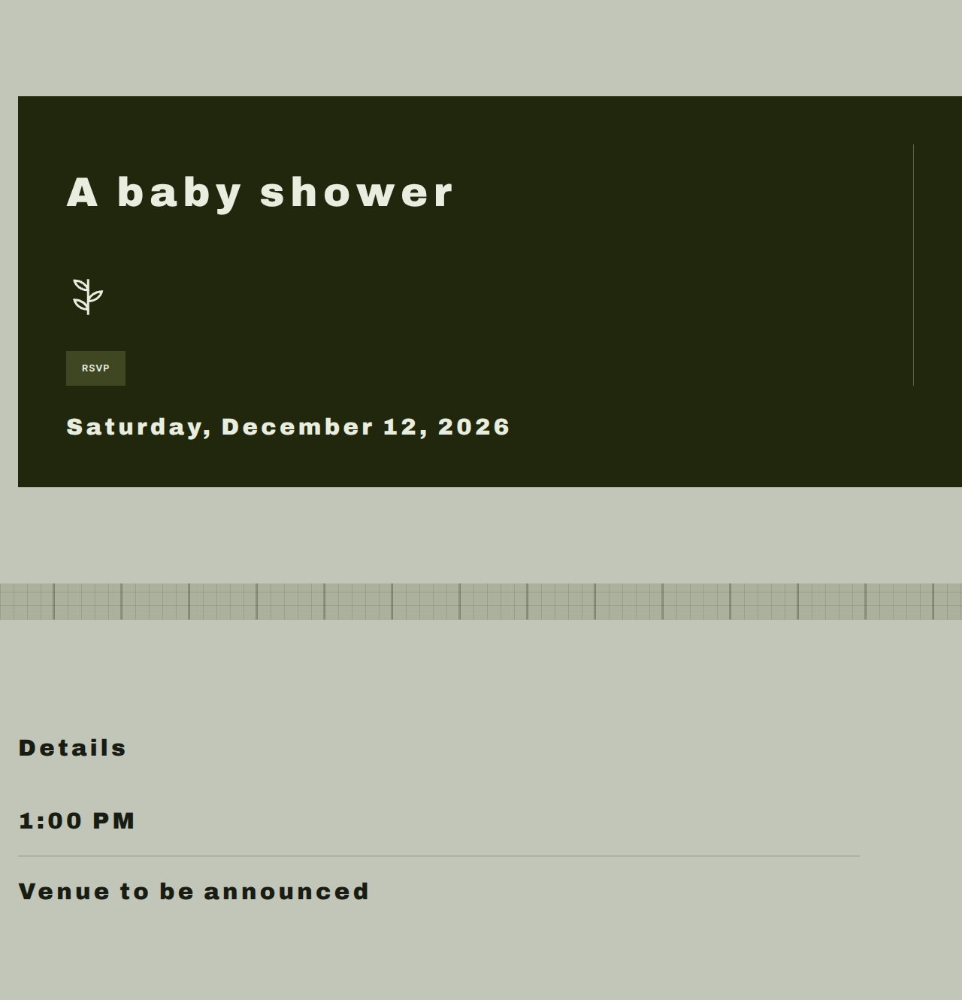
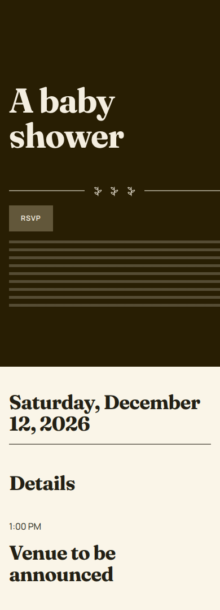
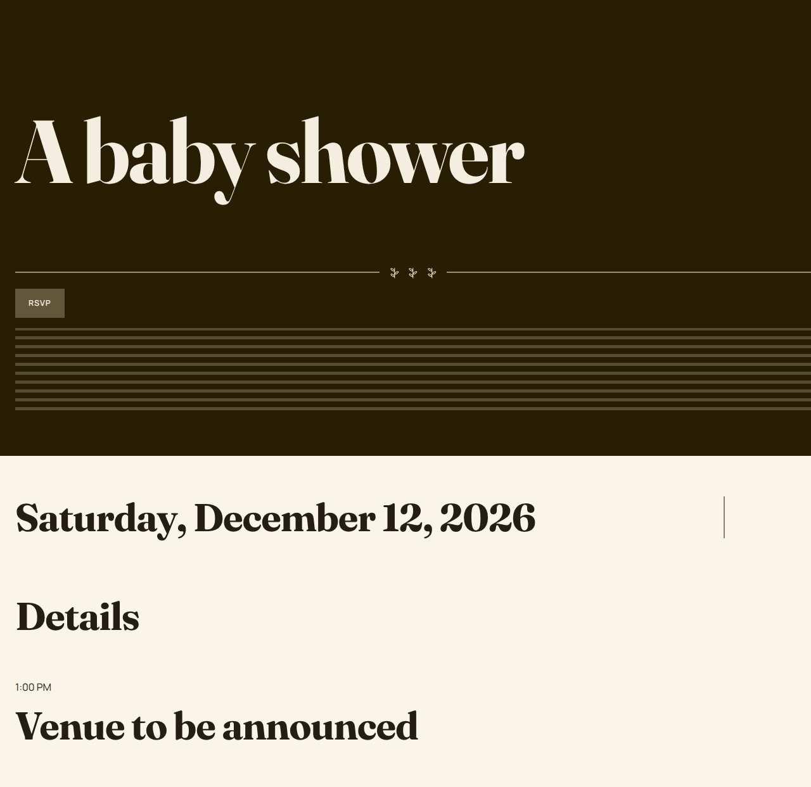
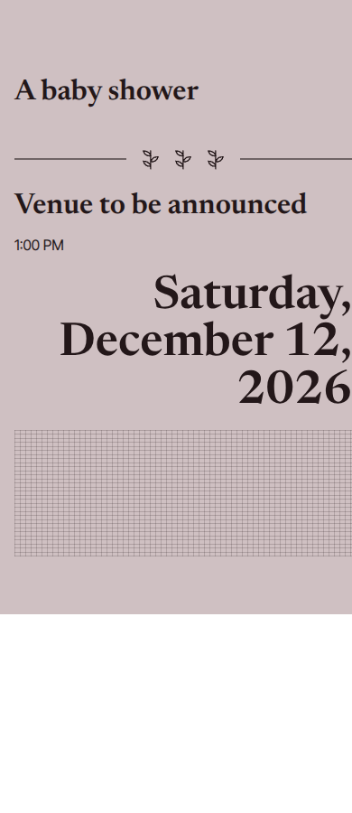
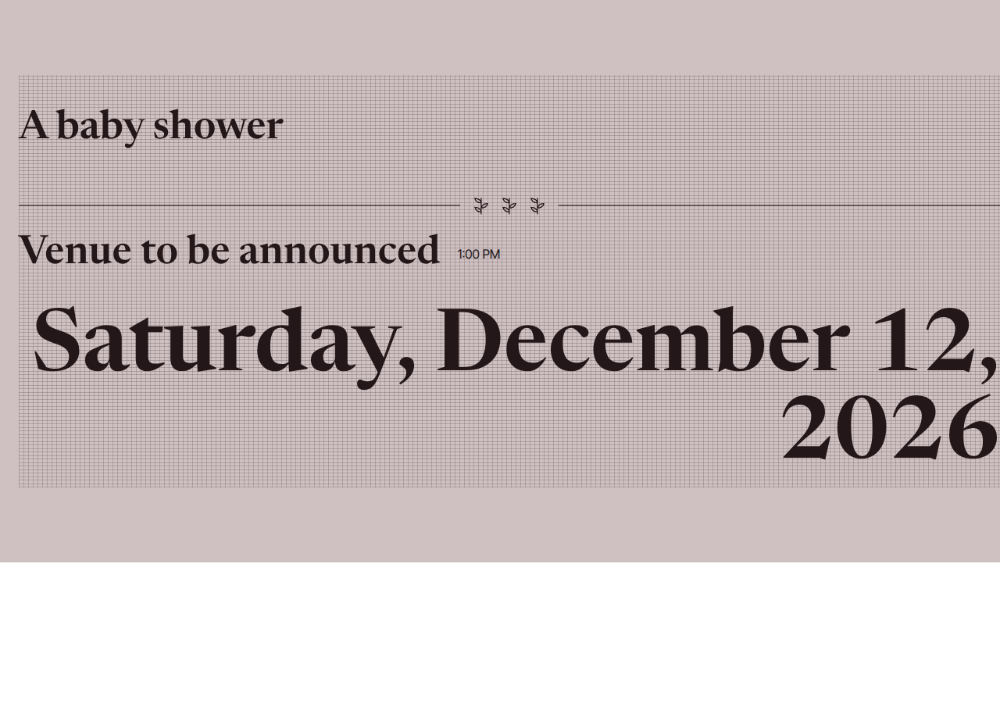

One authoritative EventIdentity (the frozen 4D fixture) → three sibling concepts → artwork where the creative direction asked for it.
DesignIntent. A concept with no artwork chose none, and was not overridden.diagnostic-local-directory:/home/user/event-platform/docs/model-evals/results/phase-4e-full-smoke-locally-grown/artwork. No Supabase Storage upload was exercised in this run; the real adapter exists and is unit-tested, but hosted Storage must not be mutated for a smoke and no local Supabase Storage is available here.| text provider calls | 7 ({"concept_premise":1,"design_intent":3,"composition":3}) |
|---|---|
| image attempts / limit | 0 / 8 |
| artwork delivered / failed | 0 / 0 |
| text-model cost | $0.4094 |
| image cost / ceiling | $0.0000 / $1.50 |
| total provider cost | $0.4094 |
| wall time | 87.5 s |
| per-image latency | none ms |
| image provider / model | openai-images / gpt-image-2.5-sunburst-2026-09-08 |
A calm, tended welcome that gently unfolds from first growth into flourishing promise.
| premise | Cultivated Welcome — Let the celebration unfold through a sense of cultivation, moving from emerging growth toward flourishing promise. The baby shower welcome feels intentionally tended, with becoming at its heart. |
|---|---|
| design intent | editorial / mid / spacious / ornament restrained / hierarchy restrained / motifs ["botanical","linen"] |
| artwork decision | none |
| geometry 390 / 1280 | clean true; overflow false / false; text overflow 0 / 0 |
| page size 390 / 1280 | {"width":390,"height":1117} / {"width":1280,"height":1330} |
This direction chose no artwork. That is a valid output and was not overridden.


Bright, brisk and full of discovery, this choice brings the polished energy of a market morning to every welcome.
| premise | Market Morning — Shape the welcome around the buoyant cadence of a market morning, where each encounter feels fresh, appealing and carefully selected. The locally grown idea becomes an active guest journey rather than a static scene. |
|---|---|
| design intent | statement / light / compact / ornament restrained / hierarchy monumental / motifs ["stripe","botanical"] |
| artwork decision | none |
| geometry 390 / 1280 | clean true; overflow false / false; text overflow 0 / 0 |
| page size 390 / 1280 | {"width":390,"height":1078} / {"width":1280,"height":1243} |
This direction chose no artwork. That is a valid output and was not overridden.


Harvest warmth, tactile depth and confident plenty create a richly gathered welcome that feels polished, never rustic.
| premise | Gathered Abundance — Frame the shower as a gathered harvest, allowing fullness and generosity to make the coming arrival feel richly celebrated. Abundance is disciplined into a confident whole rather than allowed to become rustic or busy. |
|---|---|
| design intent | invitation / mid / balanced / ornament decorative / hierarchy dramatic / motifs ["botanical","linen","stripe"] |
| artwork decision | none |
| geometry 390 / 1280 | clean true; overflow false / false; text overflow 0 / 0 |
| page size 390 / 1280 | {"width":390,"height":900} / {"width":1280,"height":900} |
This direction chose no artwork. That is a valid output and was not overridden.


Deliberately unanswered here, and not put to any model.